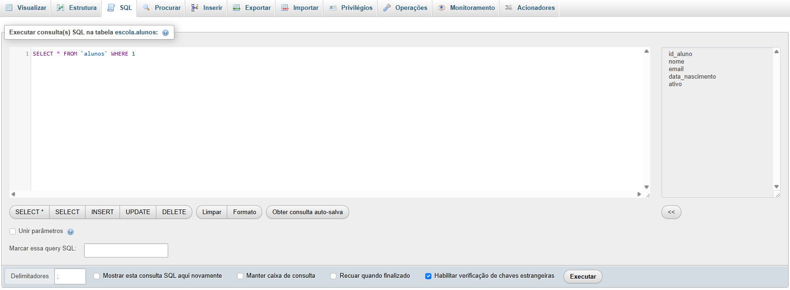

Tutorial phpMyAdmin — Passo a passo
Trabalho local com MySQL/MariaDB via navegador, com foco no essencial.
Como acessar
- Abra o navegador e acesse
http://localhost/phpmyadminouhttp://localhost:8080/phpmyadmin. - Informe o usuário e a senha definidos na sua instalação local. Normalmente usuário
roote sem senha.
Tela inicial
Você verá a barra lateral com os bancos, as abas na parte superior (Bancos de dados, SQL, Status, Contas de usuário, Exportar, Importar, etc.) e o painel central.
- Barra lateral: lista os bancos; clique em um para ver suas tabelas.
- Abas: atalhos para criar bancos, importar/exportar e outras ações.
- Painel central: status e links rápidos.
Criar banco de dados
- Clique na aba Bancos de dados.
- Em Criar banco de dados, digite um nome (ex.:
escola). - Escolha a collation
utf8mb4_general_ci. - Clique em Criar.
Criar tabela
Exemplo de tabela alunos no banco escola.
- Na barra lateral, clique no banco (ex.:
escola). - No painel central, informe o nome da tabela (ex.:
alunos) e a quantidade de colunas (ex.: 5). Clique em Criar. - Preencha as colunas conforme o modelo:
id_aluno— INT, marque A_I (Auto Increment) e defina como Primária.nome— VARCHAR(100), NOT NULL.email— VARCHAR(120).data_nascimento— DATE.ativo— TINYINT(1) (0 ou 1).
- Clique em Salvar.
Erro comum: esquecer de marcar A_I na coluna
id ou não definir a chave primária.Inserir registros
- Clique na tabela (ex.:
alunos) na barra lateral. - Acesse a aba Inserir.
- Preencha os campos (deixe
idvazio se estiver com Auto Increment) e clique em Executar.
Dica: o formato para datas é
YYYY-MM-DD.Visualizar, editar e excluir registros
- Abra a aba Visualizar da tabela.
- Use os ícones: ✏️ para editar, ⛔ para excluir, ⬅️ para copiar um registro.
- Use o campo Filtrar linhas para localizar registros rapidamente.
Tela de edição de um registro.
Alterar estrutura da tabela
- Acesse a aba Estrutura da tabela.
- Para adicionar colunas, use a opção Adicionar X campo(s) e selecionar após qual coluna a nova ficará.
- Para editar tipo/tamanho/nulidade, clique em ✏️Alterar ao lado da coluna.
Criar relações entre tabelas (chaves estrangeiras)
Exemplo: relacionar matriculas → alunos (FK aluno_id → alunos.id).
- Garanta que ambas as tabelas usam o mecanismo InnoDB e o mesmo charset/collation.
- Na tabela matriculas, crie a coluna
aluno_iddo tipo INT (mesmo tipo da PK emalunos). - Abra a aba Estrutura de matriculas e clique em Relacionamentos ou Visão de relação(ões).
- Em Restrições de chave estrangeira, selecione:
- Coluna:
aluno_id - Tabela:
alunos - Coluna:
id - ON DELETE / ON UPDATE: escolha o comportamento (ex.: RESTRICT ou CASCADE).
- Coluna:
- Clique em Salvar.
Perceba que agora a coluna id_aluno aparece com uma chave cinza, indicando que é uma chave estrangeira.
Logo abaixo da tabela está identificado cada chave presente na tabela.
Logo abaixo da tabela está identificado cada chave presente na tabela.
Exportar (backup)
- Selecione o banco na barra lateral.
- Acesse a aba Exportar.
- Escolha Rápido (ou Personalizado) e formato SQL.
- Clique em Executar para baixar o arquivo.
Importar (restauração)
- Crie (se necessário) um banco vazio e selecione-o.
- Acesse a aba Importar.
- Escolha o arquivo
.sqle clique em Executar.
Erros comuns & soluções
Arquivo .sql muito grande ao importar
Divida por tabelas ou ajuste limites de upload na instalação local (
upload_max_filesize).
Acentos quebrados / caracteres estranhos
Padronize para
utf8mb4 no banco, tabelas e exportação/importação.
Chave estrangeira impede excluir
Exclua registros filhos primeiro ou ajuste a regra de ON DELETE (com cuidado).
Duplicate entry (valor duplicado)
PK/campo único já existe. Verifique o valor e os índices da tabela.
Erro de sintaxe SQL
Confira nomes de tabelas/colunas e vírgulas; use a aba Estrutura para checar a definição.
Tipos incompatíveis em FK
Garante que FK e PK têm mesmo tipo/tamanho (ex.: INT ↔ INT).
Engine errado (MyISAM)
Troque para InnoDB para usar chaves estrangeiras e transações.
Data inválida (0000-00-00)
Insira uma data válida; confira modo STRICT se estiver habilitado.
Glossário rápido
Banco de dados: conjunto de tabelas relacionadas.
Tabela: estrutura com colunas (campos) e linhas (registros).
PK (Primary Key): identifica unicamente cada registro.
FK (Foreign Key): cria relação entre tabelas.
Índice: acelera buscas em colunas.
Collation/Charset: regras e codificação de texto.
InnoDB: mecanismo que permite FKs e transações.
Executar consultas SQL (referência)
Quando precisar executar um comando manualmente:
- Selecione o banco ou a tabela (define o contexto).
- Abra a aba SQL, digite o comando e clique em Executar.
SELECT * FROM alunos ORDER BY nome;Exemplo simples de consulta.

Encerramento
Com essas telas e procedimentos, é possível criar bancos e tabelas, inserir/editar dados, relacionar tabelas e fazer backups/restaurações no ambiente local.
Não se assuste com a quantidade de informações e botões que aparecem na tela, foque no que você precisa e siga este tutorial.